|
|
|
red
seaweeds text index
| photo index
|
| Seaweeds > Division Rhodophyta |
| Scaly
red seaweed Peyssonnelia sp.* Family Peyssonneliaceae updated Jan 13 Where seen? On the intertidal, this flat hard circular seaweed encrusts hard surfaces near reefs, often overlapping like fish scales. Features: Clusters of flat circular encrusting (2-4cm) disks that have a slippery surface. The disks are hard because they incorporate calcium carbonate on the underside. Most of the disk is stuck to a hard surface, sometimes the edges are free. Often crowded or overlapping. Colour orangey, yellowish brown, chocolate brown to brown. Sometimes confused with Bracket brown seaweed (Lobophora variegata) which is not so encrusting and is leathery. According to AlgaeBase: there are 72 species of Peyssonnelia many of them requiring microscopic examination to determine to species. |
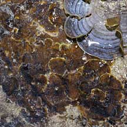 Tanah Merah, Dec 09 |
|
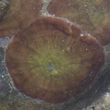 |
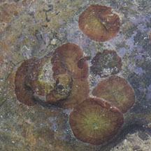 Labrador, May 06 |
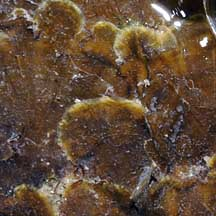 |
On this website, they are grouped by external features for convenience of display.
| Scaly red seaweeds on Singapore shores |
| Photos of Scaly red seaweeds for free download from wildsingapore flickr |
| Distribution in Singapore on this wildsingapore flickr map |
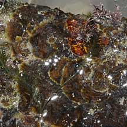 East Coast, Aug 09 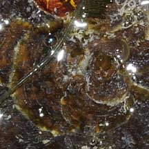 |
Tanah Merah, Dec 09 |
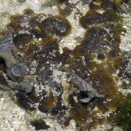 Sisters Island, Jan 07 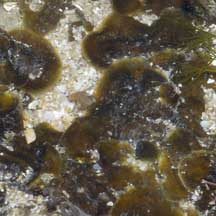 |
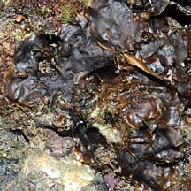 Cyrene Reef, Nov 08 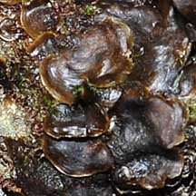 |
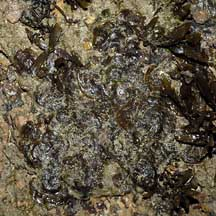 Lazarus Island, Dec 06 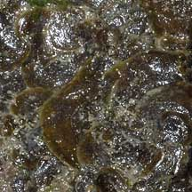 |
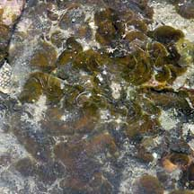 St. John's Island, Mar 07 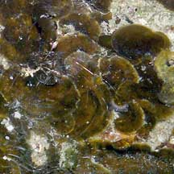 |
| Peyssonnelia
species recorded for Singapore Pham, M. N., H. T. W. Tan, S. Mitrovic & H. H. T. Yeo, 2011. A Checklist of the Algae of Singapore.
|
Links
|